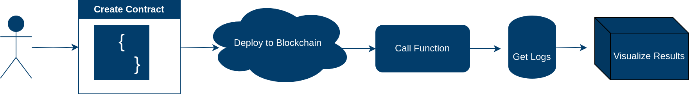
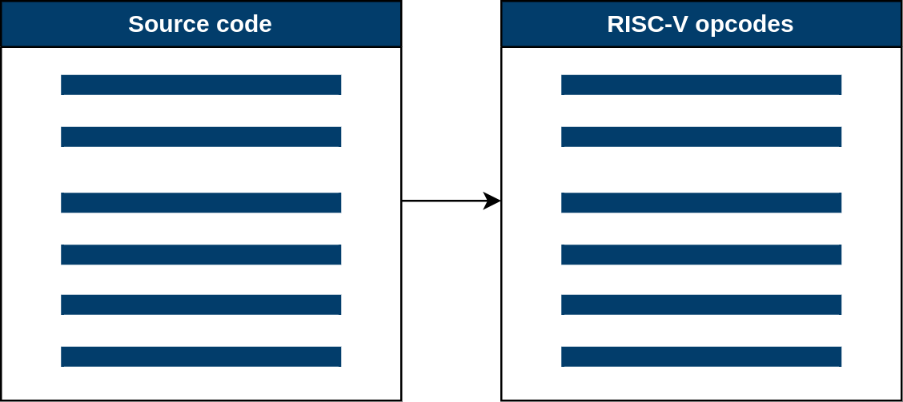
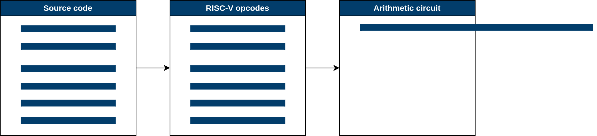
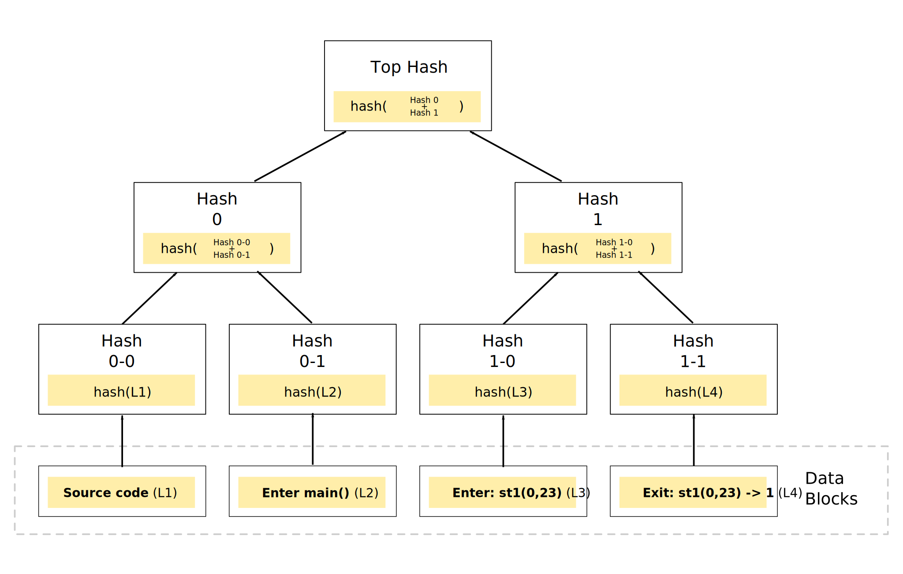

Credibility and Reproducibility of Scientific Simulations on the Blockchain
deRSE25 Conference
Feb 26 2025 | Ashwin Kumar Karnad |
Supported by JuRSE Travel Grant.
The problem of reproducibility in science
Have you failed to reproduce an experiment?

[Baker, M. 1,500 scientists lift the lid on reproducibility. Nature 533, 452-454 (2016)]
The problems continued...
- Analysed and published data not in sync
- Missing link between the analyser and the publisher
Current State of the Art
- Version-controlled code to track changes.
- Dependency tracking to ensure consistency.
- Specified hardware configurations.
- Use of Docker for one-click simulation setups.
Why is there still non-determinism?
- Floating-Point Arithmetic and hardware differences
- Concurrency, Parallelism, and Race conditions
- External Input and Environmental Factors
- Hardware and Low-Level Execution
- ...
Why is there still non-determinism?
- Floating-Point Arithmetic and hardware differences
- Concurrency, Parallelism, and Race conditions
- External Input and Environmental Factors
- Hardware and Low-Level Execution
- ...
Blockchain as a decentralised global computer
- Transactions (computations) are state transitions
- State is stored in a distributed ledger
- Consensus is achieved through validators
Need for determinism in blockchain
- Consensus requires all nodes to agree on the state
- Non-deterministic computations can lead to forks
How determinism is achieved
- No floating point instructions
- Single threaded
- Controlling External Inputs
- Controlling Random numbers
- Bytecode Standardization
How determinism is achieved
- No floating point instructions
- Single threaded
- Controlling External Inputs
- Controlling Random numbers
- Bytecode Standardization
Running simulations "on chain"
- Completely Reproducible
- Provenance and authorship is proveable
Running simulations "on chain" - workflow
Example simulations
Limitations of "on chain" simulations
- Lack of math function
(exponents, matrices, floating point, randomness) - Costs (Computation and storage)
- Speed
Limitations of "on chain" simulations
- Lack of math function
(exponents, matrices, floating point, randomness) - Costs (Computation and storage)
- Speed
Running simulations "off chain"
- Use blockchain for provenance and authorship
- Use traditional techniques for compute
- RISC0: compile to RISC5 and form arithmetic circuits
- Use merkle trees for hashing the call stack
Eg:
Running simulations "off chain"
RISC0 approach
Running simulations "off chain"
RISC0 approach
Using merkle trees
 Merkle tree calculation. [Source: Wikipedia]
Merkle tree calculation. [Source: Wikipedia]
Using merkle trees
 Merkle tree with call stack as data nodes.Example simulations
Conclusion & Future Outlook
- On-chain vs. off-chain solutions have different trade-offs
- Future Research Directions:
- Specialized (E)VMs for scientific computing
- Integration with existing scientific workflows
- Addressing computational efficiency and costs
- Hybrid approaches leveraging both on-chain and off-chain benefits